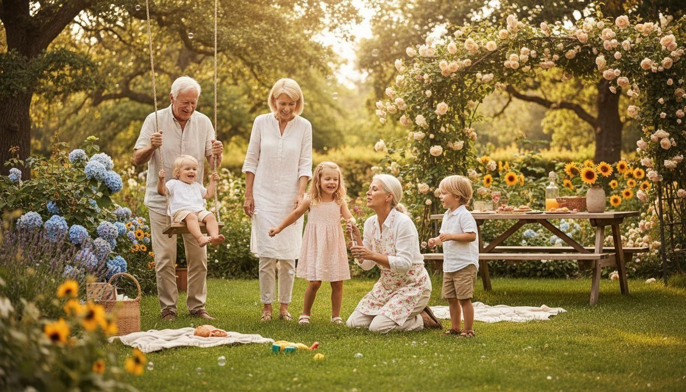

The panorama could not load.
Look around · Tap picture details to discover

Drag or use arrow keys to turn. Scroll or pinch to zoom. Home resets the camera. Choose a family to reveal its smaller details.
The surrounding garden is AI-imagined from the original lesson photograph. The Photo button opens the retained photograph for a sharper close look.